Calculadora Distribuida
Introducción
El cómputo distribuido es un pilar fundamental del desarrollo de software moderno. Aprender a coordinar tareas concurrentes y a comunicar procesos distribuidos resulta esencial para construir aplicaciones escalables, robustas y reactivas.
El objetivo del trabajo práctico es crear una calculadora distribuida utilizando una arquitectura cliente-servidor. Contaremos con un único servidor central (la calculadora) y múltiples clientes (los operadores) que se comunican concurrentemente.

La comunicación entre los nodos se realizará a través de sockets. Desde el lado del servidor, cada conexión se procesará en un thread distinto.
Los operadores enviarán operaciones al servidor ("+ 1", "* 3", "/ 2"), el cual aplicará estas operaciones sobre un valor central. Las operaciones se aplicarán en orden de llegada.

Protocolo de Comunicación
El protocolo de comunicación será sencillo. Los nodos intercambiarán mensajes de texto delimitados por un salto de línea. Para mas información, ver text-based protocols.
El servidor aceptará dos tipos de mensajes: OP <operacion>; GET.
Al recibir el mensaje OP, el servidor aplicará la operación, y responderá OK en caso de éxito, y ERROR "<motivo>" en caso de error.
La operación tiene dos componentes, separados por whitespace: <operador> <operando>. El operador puede ser +, -, *, /, y el operando es un u8.
Al recibir el mensaje GET, el servidor responderá con el valor actual de la calculadora VALUE <valor>.
La especificación formal de los mensajes del protocolo está dada en notación Backus-Naur (BNF).
<mensaje> ::= <cuerpo> <eom>
<cuerpo> ::= <msg-op> | <msg-get> | <msg-ok> | <msg-err> | <msg-value>
<msg-op> ::= "OP" <ws> <operacion>
<msg-get> ::= "GET"
<msg-ok> ::= "OK"
<msg-err> ::= "ERROR" <ws> <quote> <motivo> <quote>
<msg-value> ::= "VALUE" <ws> <numero>
<operacion> ::= <operador> <ws> <numero>
<operador> ::= "+" | "-" | "*" | "/"
<numero> ::= número de 8 bits (u8)
<ws> ::= whitespace
<eom> ::= "\n"
<quote> ::= "\""
Ejemplo 1
Consideramos un único servidor, y un único cliente.
client : OP + 1
server : OK
client : GET
server : VALUE 1
client : OP * 3
server : OK
client : OP + 2
server : OK
client : GET
server : VALUE 5
Ejemplo 2
En caso de una operación inválida, respondemos con un mensaje de error e ignoramos la operación.
client : OP + 1
server : OK
client : OP % 5
server : ERROR "Operacion invalida"
client : GET
server : VALUE 1
Binarios Entregables
El proyecto de Rust deberá estar compuesto por dos binarios:
serverclient
Para más información sobre como estructurar el proyecto, referirse The Rust Programming Language - Capítulo 7.
Para validar que el proyecto está bien estructurado, ejecutar cargo build deberá generar dos binarios, uno con el nombre de server, y otro con el nombre de client.
Servidor
El servidor recibirá como argumento la dirección a través de la cual escuchará conexiones entrantes de los operadores.
cargo run --bin server -- 192.168.0.0:12345
Para más información sobre concurrencia en Rust, referirse a The Rust Programming Language - Capítulo 16. Como ejemplo de un proyecto que utiliza concurrencia y redes, pueden leer The Rust Programming Language - Capítulo 21.
En caso de un error irrecuperable, se debe imprimir por STDERR con el siguiente formato:
ERROR "<motivo>"
Un error irrecuperable es uno que fuerza la finalización del programa. Por ejemplo:
- No se reciben los argumentos esperados.
- El servidor no puede bindear un socket en la dirección especificada.
Por cada conexión entrante, el servidor debe crear un hilo nuevo para manejar esa conexión.
-
En caso de un error irrecuperable durante una conexión (ej. el cliente se desconecta abruptamente), se debe imprimir el error en el formato especificado previamente, y finalizar ese hilo, pero NO el servidor completo.
-
En caso de un error recuperable durante una conexión (ej. operación inválida), se debe enviar el error al cliente en el formato especificado previamente, pero manteniendo la conexión activa.
Cliente
El cliente recibirá como argumento la dirección del servidor, así como un archivo del cual deberá leer las operaciones que se deben enviar al servidor.
cargo run --bin client -- 192.168.0.0:12345 data/a.txt
El cliente deberá establecer una conexión con el servidor, y enviar las operaciones. No se debe validar que las operaciones del archivo sean válidas, eso es trabajo del servidor. Al finalizar la ejecución, el cliente deberá imprimir el valor actual de la calculadora.
En caso de un error irrecuperable, se debe imprimir por STDERR con el formato especificado previamente.
Opcionales
Si bien no obligatorios para la entrega, proponemos y recomendamos los siguientes opcionales:
- Agregar tests de integración. Estos son muy útiles para validar que un sistema complejo funcione correctamente. Es algo que van a tener que realizar en el trabajo práctico grupal.
- Agregar un sistema de logging unificado. Se deberá tener un hilo logger designado, que reciba eventos por un canal MPSC, y los escriba en un archivo de log.
Restricciones
- Escribir el programa sin utilizar
.unwrap()o.expect(). Todo caso de error deberá manejarse idiomáticamente con las estructuras y funciones brindadas por el lenguaje. - No se permite que el programa lance un panic!().
- No se permite utilizar la función exit(). Se deberá salir del programa finalizando el scope de la función
main. - No se permite utilizar el módulo mem para la manipulación de memoria.
- Para realizar un uso adecuado de memoria y respetar las reglas de ownership se deberá evitar el uso de .clone() y .copy() en las estructuras principales de datos.
- No debe haber un busy wait.
Requerimientos no funcionales
Los siguientes son los requerimientos no funcionales para la resolución del proyecto:
- El proyecto deberá ser desarrollado en la última versión estable de Rust (1.89), usando las herramientas de la biblioteca estándar.
- Se deben implementar tests unitarios.
- No se permite utilizar crates externos.
- El código fuente debe compilarse en la versión estable del compilador y no se permite utilizar bloques
unsafe. - El código deberá funcionar en ambiente Unix / Linux.
- Los programas deberán ejecutarse en la línea de comandos, leyendo de
stdiny escribiendo astdout/stderr. - La compilación no debe arrojar
warningsdel compilador, ni del linterclippy. - Las funciones y los tipos de datos (
struct,enum) deben estar documentados siguiendo el estándar decargo doc. - El código debe formatearse utilizando
cargo fmt. - Las funciones no deben tener una extensión mayor a 30 líneas. Si se requiriera una extensión mayor, se deberá particionarla en varias funciones.
- Cada tipo de dato implementado debe ser colocado en un módulo (archivo) independiente.
No cumplir con todas las restricciones y requisitos no funcionales implica la reentrega automática del ejercicio. Se debe prestar minuciosa atención a cada uno de los detalles.
ADVERTENCIA
El proyecto deberá realizarse de manera individual. Cualquier tipo de copia significa la expulsión automática de la materia. No está permitido el uso de código generado por ninguna IA, ni copiar código de soluciones existentes en internet.
Fechas de entrega
Primera entrega: 15/09 - 18:00
La entrega se realizará por Algotron. Para que la entrega se considere válida, deberán pasar todas las verificaciones de la plataforma.
Luego de la primera entrega se harán las correcciones correspondientes y se podrá volver a entregar el ejercicio en dos oportunidades más.
ADVERTENCIA
No aprobar el trabajo imposibilitará la continuidad en la materia.